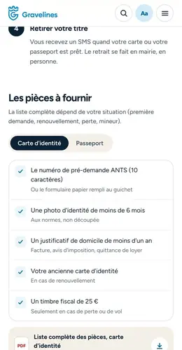

01Accueil
Entre remparts et mer
La webcam et les conditions du jour à la place du bandeau vidéo, la recherche dans le premier écran, les entrées par situation, l'agenda et le kiosque.
Ouvrir la page

02Fiche démarche
Carte d'identité et passeport
Votre démarche la plus consultée : l'essentiel en quatre cases, les étapes, les pièces à fournir, le rendez-vous toujours à portée de main.
Ouvrir la page

03Recherche
La bonne réponse en tête
Une recherche qui corrige les fautes, classe les résultats par type et range les actes administratifs à part.
Ouvrir la page0 erreurau test automatique d'accessibilité WCAG 2.1 AA, de 340 à 1 440 pixels
0,9 Mopour l'accueil complet sur téléphone, photos comprises
67 %de vos visites se font sur mobile : tout a été pensé pour le pouce